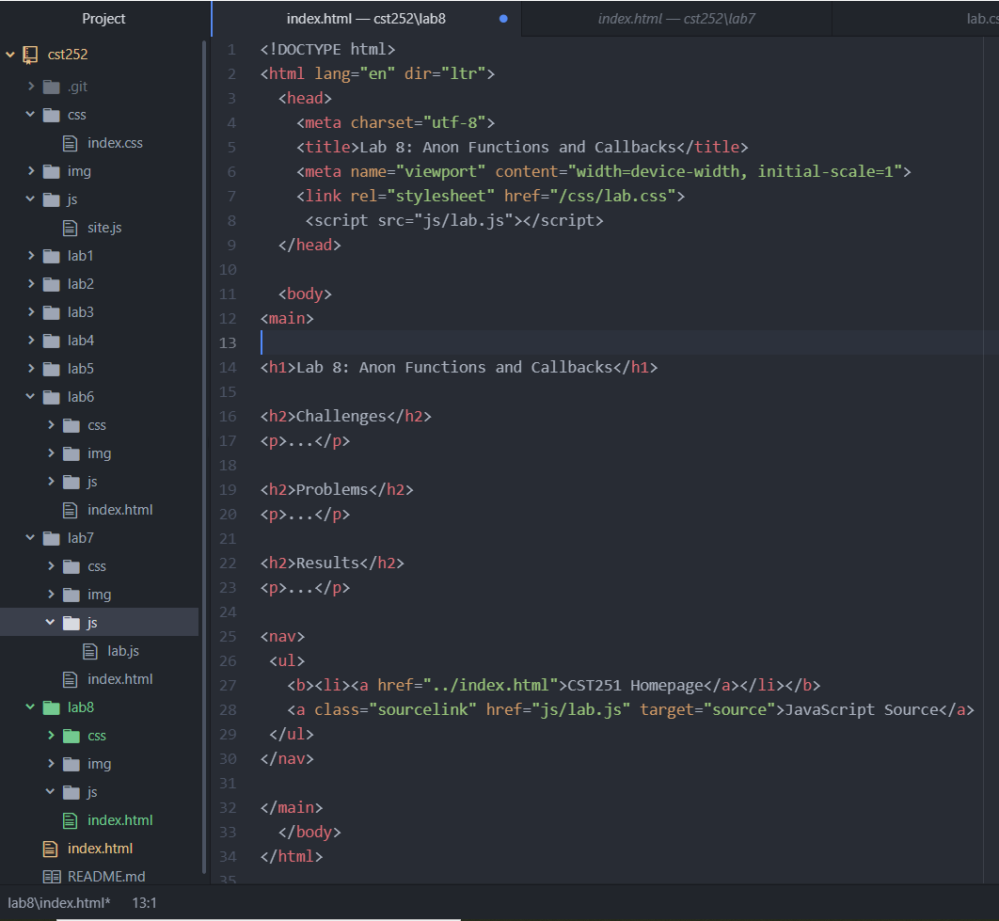
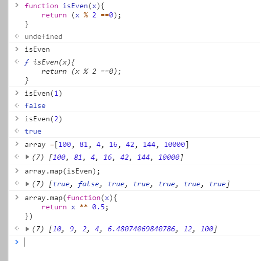

Lab 8: Anon Functions and Callbacks
Challenges
I had to do this lab all over again due to Wes changing it.
Problems
Trying to see if the code was right for me and my partner. Not a lot to say this time. Just that I had to redo the JS for this lab. Also we used a diffrent js script
Results
I do equations in JS bacially!

